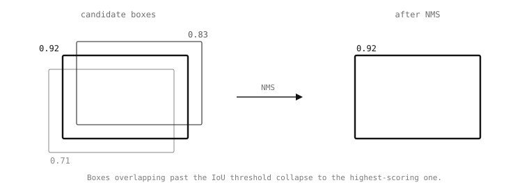

7.13. 비최대 억제(Non-max suppression)¶
검출 신경망은 일반적으로 동일한 실제 객체 주위에 여러 개의 겹치는 후보 상자를 생성합니다. 객체 근처의 각 앵커가 비슷한 점수로 반응하고, 후처리기는 그 모두를 보게 됩니다. 비최대 억제(NMS)는 그 군집을 하나의 상자로 만드는 단계입니다.
알고리즘은 간단합니다. 후보 상자를 점수순으로 정렬하고, 가장 높은 점수의 상자를 선택한 다음, 선택한 임계값을 초과하여 그것과 겹치는 다른 모든 상자를 억제하고, 남은 것들 중에서 다음으로 높은 것을 선택하여 이를 반복합니다. 겹침 정도를 나타내는 지표는 교집합 대 합집합 비율(IoU)로, 두 상자의 공유 면적을 합쳐진 면적으로 나눈 값이며 0(겹침 없음)에서 1(완전히 동일한 상자) 사이의 값입니다. 모든 기본 제공 후처리기의 nms_threshold 생성자 인자는 그 이상이면 상자가 이미 유지된 상자의 중복으로 취급되는 기준값입니다.

NMS는 겹치는 검출의 군집을 점수가 가장 높은 하나로 축소합니다.¶
7.13.1. Soft-NMS¶
기본 제공되는 ml.utils.NMS 클래스는 Soft-NMS를 구현합니다. 이는 겹치는 상자를 곧바로 제거하는 대신 겹침 정도에 따라 점수를 감소시키는 개선된 방식입니다. 낮아진 점수가 임계값 아래로 떨어지면 상자는 제거되고, 그렇지 않으면 감소된 점수로 살아남아 다음 라운드에서 경쟁합니다.
nms_sigma 매개변수는 감소가 얼마나 공격적인지를 제어합니다. nms_sigma가 작으면(기본값인 0.1) 감소가 가파릅니다. 많이 겹치는 상자는 점수가 거의 0으로 떨어지며 Soft-NMS는 고전적인 NMS로 환원됩니다. nms_sigma가 크면 감소가 완만해지고 서로 다른 객체의 겹치는 상자가 더 자주 살아남습니다. 이는 같은 클래스의 실제 객체가 실제로 겹칠 때(얼굴이 많은 군중, 손바닥이 모인 무리) 중요합니다.
nms_sigma를 <= 0으로 설정하면 감소가 완전히 비활성화됩니다. 겹치는 상자는 원래 점수 그대로 통과하며, 점수 임계값만이 그것들을 걸러냅니다.
7.13.2. 직접 생성하기¶
모든 기본 제공 후처리기는 추론마다 새로운 NMS를 생성하고, 각 후보를 그것에 추가한 다음, 마지막에 get_bounding_boxes()를 호출합니다. 사용자 정의 후처리기도 동일한 패턴을 따릅니다:
from ml.utils import NMS
iw = model.input_shape[0][2]
ih = model.input_shape[0][1]
nms = NMS(iw, ih, inputs[0].roi)
for box, score, class_idx in candidates:
nms.add_bounding_box(box.xmin, box.ymin,
box.xmax, box.ymax,
score, class_idx)
result = nms.get_bounding_boxes(threshold=nms_threshold,
sigma=nms_sigma)
생성자는 신경망의 입력 너비와 높이를 픽셀 단위로, 그리고 모델이 실행된 원본 이미지의 ROI를 받습니다. add_bounding_box()는 그 신경망 입력 픽셀 공간의 상자 좌표를 받고, get_bounding_boxes()는 ROI를 사용하여 살아남은 것들을 이미지 좌표로 다시 매핑합니다. 이 재매핑은 정규화 스트레치를 자동으로 고려하며(예측기가 본 것과 동일한 ROI를 사용하여 상자를 다시 투영함), 따라서 반환된 상자는 캡처된 프레임에 그릴 준비가 되어 있습니다.
반환 형태는 클래스별 리스트의 리스트로, add_bounding_box에 전달된 label_index로 색인됩니다. 비어 있는 클래스 리스트도 색인이 모델의 클래스 색인과 일치하도록 보존됩니다. enumerate(result)는 클래스를 해당 검출과 함께 순회합니다.